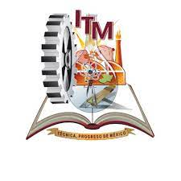

Con inusitado júbilo y expectación, el día 6 de abril de 1964, siendo Gobernador del Estado el Lic. Agustín Arriaga Rivera, y en las lomas de Santiaguito, se colocó la primera piedra de lo que sería un año más tarde el Instituto Tecnológico Regional de Morelia. En esa ceremonia, el gobernante michoacano dijo en su discurso de inauguración: "A 27 años de reestructurada la educación politécnica en la capital de la República, con la más honda satisfacción del pueblo y del Gobierno de Michoacán, hoy, fecha que será |histórica, se colocó la primera piedra del edificio en que habrá de trabajar el Instituto Tecnológico Regional de este Estado." A este acto concurrieron más de diez mil jóvenes representantes de todas las escuelas de segunda enseñanza y superiores del Estado, quienes jubilosos externaron su agradecimiento al Presidente López Mateos, por el trascendental acuerdo que determinó la creación y funcionamiento de esta Institución, cuyos beneficios para el Estado de Michoacán serían incalculables.
